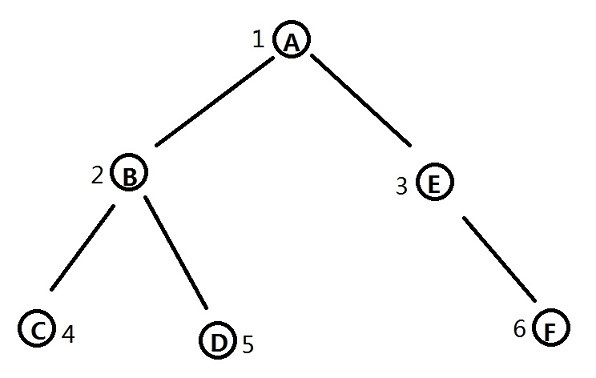
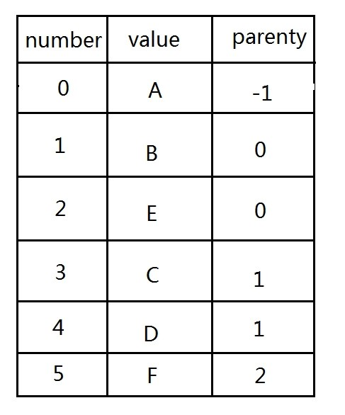
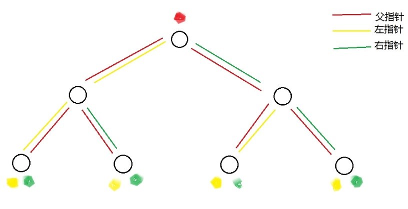
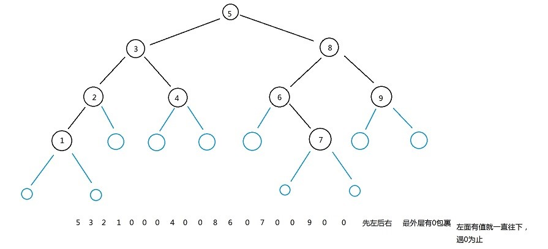
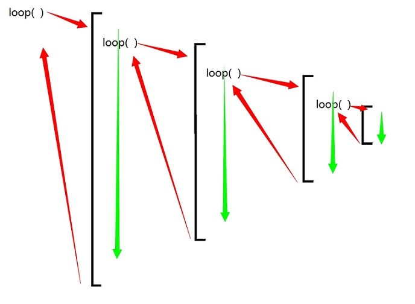
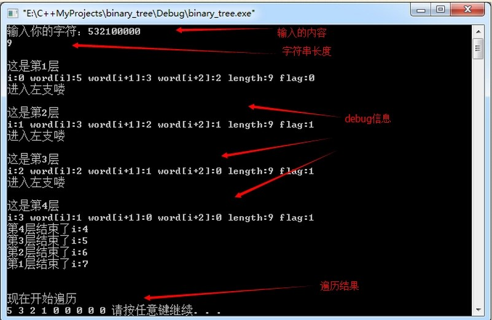

binaryTree
树状图是一种数据结构，它是由n（n>=1）个有限节点组成一个具有层次关系的集合。把它叫做“树”是因为它看起来像一棵倒挂的树，也就是说它是根朝上，而叶朝下的。
它具有以下的特点：
每个节点有零个或多个子节点；
没有父节点的节点称为根节点；
每一个非根节点有且只有一个父节点；
除了根节点外，每个子节点可以分为多个不相交的子树；

树在很多地方都可以应用和使用，比如对于磁盘文件的遍历，因为文件夹的存储形式的如同金字塔形状，
首先是用结构体数组的模式

然后就是用链表去实现：
怎么用链表去实现一个二叉树？
我想最终的存储形式应该是这样：

那么节点的数据类型就应该是这样
struct Node
{
data;
left;
right;
parenty;
}；
运行的时候，输入5 3 2 1 0 0 0 4 0 0 8 6 0 7 0 0 9 0 0
那么这个树应该是这样的
算法描述
：对于一个二叉树来说，它只有左孩子和右孩子两个方向，节点值为0就代表没有孩子节点，所以用户输入数组里面，最前面的一个数就是根节点的数值，为5,5后面的3代表它的左孩子数值为3，所以我们把注意力里先放在3身上，3后面的数字为2，代表3的左孩子为2，2后面的数值为1，代表3的左孩子为1,1的后面为0（第一个0），代表1没有左节点，1后面的第二个0（第二个0）代表1的右孩子也为0，所以1节点的孩子节点都可以完全确定了，那么返回上一层，2后面第4个0（第三个0），2的右节点为0.。。。。。。。。。。。。。
总之一句话：
从开头向后读，A为非0数字，成为当前节点A，A后一位A+1为非0数，说明A+1为A的左孩子，遇第一个0则作为A的左孩子，0其后的数字为A的右孩子，当一个节点的左右都有孩子之后，返回父节点。

创建二叉树的伪代码
flag：用来判断当前节点的与父节点的左指针或者右指针，1代表左，2代表右，
before：指向当前节点的父节点的指针。
word[]：存储用户输入的字符串。
i：字符串的下标序号。
length：字符串的有效长度。
creat（i=0，before=-1，word[]，flag=0，）
{
建立一个node类型的p指针，
建立一个node类型空间，地址放在p里面，
把word[i]数值放在p指向的空间里面，
如果flag==1的话：当前节点的地址给父节点的左指针，before.left=p。
如果flag==2的话：当前节点的地址给父节点的右指针，before.right=p。
当前节点的parenty指向父节点，p。parenty=before。
指向之前节点的指针指向现在的节点，before=p。
如果i+1不小于word字符串的有效长度，i+1>=length。
预览一下word[i]后一位的数值，如果为0的话：当前节点的左指针为0, 否则i自增一次，进入create函数。if word[i+1]==‘0’，p.left=0，else i++，create（word,i+1,length,before,1）
预览一下word[i]后两位的数值，如果为0的话：当前节点的右指针为0, 否则i自增两次，进入create函数。if word[i+2]==‘0’，p.right=0，else i+=2，create（word,i+2,length,before,2）
i自增一次，i++；
返回p的地址值，
}
遍历二叉树的伪代码
watch（node *P）
{
输出当前节点存储的数值，print data。
如果当前节点的左指针为0的话：就输出一个0，否则，就进入函数watch（p。left） if(P->left==0) cout<<"0 "; else watch(P->left);
如果当前节点的右指针为0的话：就输出一个0，否则，就进入函数watch（p。right） if(P->right==0) cout<<"0 "; else watch(P->right);
}
递归调用的形式

打印信息
